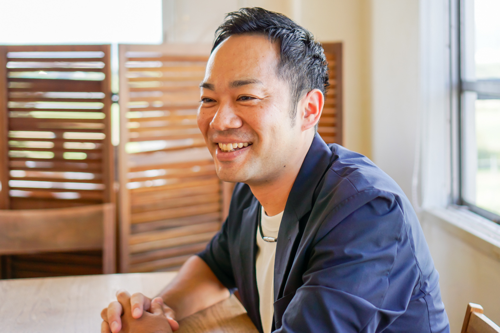

KAEL 代表 ／ 教育コーディネーター・社会教育士
現場を十六年生きた人間が、
AIで学校を"かえる(KAEL)"。

問いを起点にした単元設計と伴走支援。異年齢探究「あおいカレッジ」の立ち上げ、枚方市・京都市での探究コーディネート実績。
探究チューターAIアプリを中高に提供。ChatGPT・Gemini・Copilot 比較の教員研修、Google Workspace／Canva 活用支援。
校内研修・教職大学院での実践。リアルタイム回収×AI分析で全員の声を拾う研修手法。大人の学びと対話の場づくり。
履正社中高・大阪常翔学園中高・京都橘中高にて、生成AIの教材研究・授業設計・文書作成への活用を指導。
自ら開発した生成AI活用の探究チューターを京都橘中高・京都府立鴨沂高に提供。生徒が探究学習で実際に活用。
Canva Educators Community Kyoto 講師として京都府全域の教員に登壇。企画運営・京都市教育委員会との連携も担当。
地域学校協働活動推進員・学校運営協議会メンバーとして、学校をハブに地域と学校をつなぐ実践を重ねる。